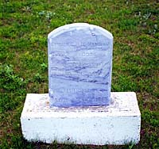

|
|
"Environmentally Sensitive Area". Please be careful where you walk and try not to disturb the natural environment. For additional information please contact Tourism Saskatchewan. | ||
| Battle of Fish Creek | |||
| GPS: | 52d 32.36m N | 106d 28.96m W | 1746 feet |
| Location: | The Fish Creek Battle site is about 5 kms north of Alvena. | ||
Fish Creek National Historic Site marks the first battle between the Metis forces and the Canadian militia. The main column of the Northwest Field Force, under General Middleton, left Fort Qu'Appelle on April 6, 1885, on their march to confront the Metis at Batoche. At Clarke's Crossing (located near the present-day Clarkboro ferry, east of Warman), Middleton decided to divide his forces and advance along both sides of the river. | |||
Fish Creek, known to the Metis as Tourond's Coulee, is approximately 27 kilometres (17 miles) south of Batoche. This was considered to be the southern boundary of the Metis settlement. Knowing that the militia was approaching, Gabriel Dumont took about 200 Metis and Indians to Fish Creek, intending to ambush the troops as they crossed the ravine on their way to Batoche. Early on the morning of April 24, Dumont and about 20 horsemen hid in a bluff near the trail the soldiers would be using. However, when Middleton's scouts discovered fresh tracks and campfires, the element of surprise was lost. Shooting broke out and the battle of Fish Creek began. The soldiers advanced to the edge of the ravine, but as they tried to shoot, they became easy targets for Dumont's marksmen who were concealed below in dense brush. Militia cannons did not do much damage, as the shells flew over the ravine and exploded, but buildings on the nearby Tourond farm were hit. The Metis tried to distract and confuse the troops by setting fire to the grass, but the militia quickly put out the blaze. In the afternoon, troops arrived from the west side of the river, but Middleton did not risk another advance. | |||
 The outcome of the battle was not decisive. The militia counted six dead and over 40 wounded. Metis casualties were much lower, but many of their horses were killed. The Metis retired to Batoche. Middleton set up camp near the river, buried the dead, and sent several wounded men upriver to Saskatoon. | |||
| GPS: 52d 32.36m N, 106d 28.96m W, 1746 feet 10 July 96, 11:45 am, Fuji Velvia 50, F8 1/60s | |||